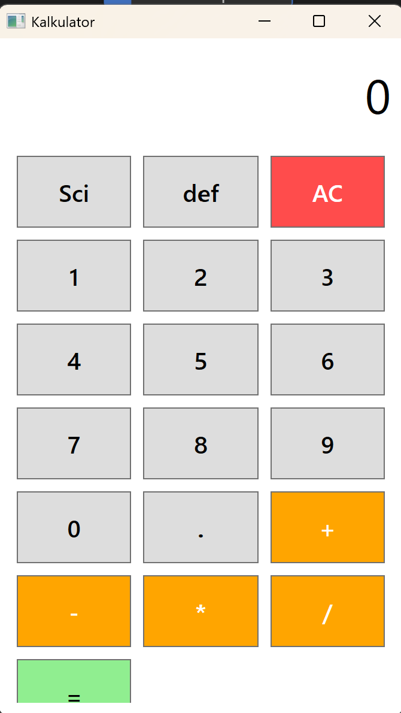
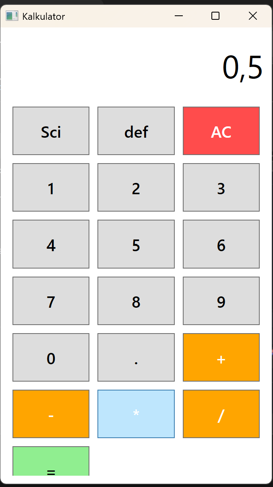
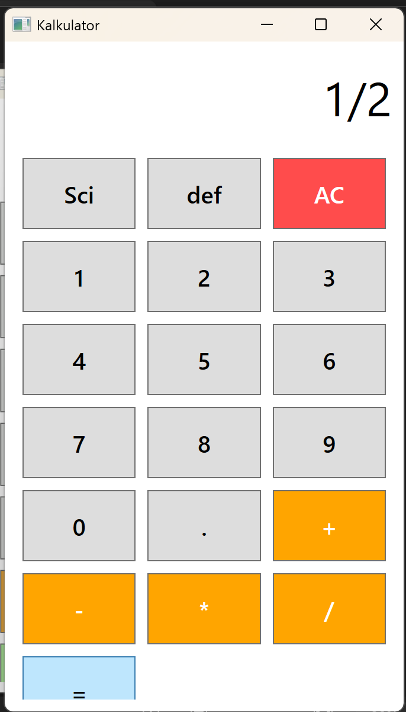

Membuat aplikasi desktop sederhana kalkulator
Disini saya menggunakan framework .NET. bahasa yang digunakan yaitu bahasa C# sebagai logika dan bahasa XAML untuk tampilan. kalkulator ini memiliki fitur yaitu operasi aritmatika dasar dan bisa mengubah hasil desimal ke dalam bentuk pecahan. Mode Scientific dan default.
Aplikasi ini memiliki beberapa fitur utama. Berikut adalah penjelasan logika C# (backend) yang berjalan di balik layar untuk masing-masing fitur:

private void masuk_angka(string angka)
{
if(Layar.Text == "0" || operasiklik)
{
Layar.Text = angka;
operasiklik = false;
}
else
{
Layar.Text += angka;
}
}
private void aturoperasi(string operasi)
{
bil1 = double.Parse(Layar.Text);
op = operasi;
operasiklik = true;
}
Fungsi masuk_angka menangani input digit dari pengguna dan memperbarui tampilan pada layar
kalkulator. Fungsi aturoperasi menyimpan angka pertama (bil1) dan operator yang
dipilih, kemudian menyiapkan kalkulator untuk menerima angka kedua.
private void bc_hitung(object sender, RoutedEventArgs e)
{
bil2 = double.Parse(Layar.Text);
double hasil = 0;
switch (op)
{
case "+": hasil = bil1 + bil2; break;
case "-": hasil = bil1 - bil2; break;
case "*": hasil = bil1 * bil2; break;
case "/":
if (bil2 == 0) { Layar.Text = "Error"; return; }
hasil = bil1 / bil2;
break;
}
if (modeScientific && hasil % 1 != 0)
{
Layar.Text = UbahKePecahan(hasil);
}
else
{
Layar.Text = hasil.ToString();
}
op = "";
}
Saat tombol sama dengan (=) ditekan, fungsi bc_hitung akan membaca angka kedua
(bil2) dan melakukan operasi matematika (+, -, *,
/) sesuai dengan operator yang sebelumnya disimpan. Jika modeScientific aktif dan
hasilnya memiliki angka desimal, maka hasil akan dikonversi menjadi format pecahan.

private string UbahKePecahan(double angka)
{
// ... kode konversi ke desimal
long penyebut = (long)Math.Pow(10, jumlahDesimal);
long pembilang = (long)Math.Round(angka * penyebut);
long fpb = CariFPB(pembilang, penyebut);
long pembilangAkhir = (pembilang / fpb) * tanda;
long penyebutAkhir = penyebut / fpb;
return $"{pembilangAkhir}/{penyebutAkhir}";
}
private long CariFPB(long a, long b)
{
while (b != 0)
{
long sisa = a % b;
a = b;
b = sisa;
}
return a;
}
Fungsi UbahKePecahan akan mengubah nilai desimal menjadi pecahan paling sederhana menggunakan
algoritma Euclidean untuk mencari Faktor Persekutuan Terbesar (FPB) antara pembilang dan penyebut.

private void bc_ac(object sender, RoutedEventArgs e)
{
bil1 = 0;
op = "";
Layar.Text = "0";
}
private void bc_sci(object sender, RoutedEventArgs e)
{
modeScientific = true;
MessageBox.Show("Mode Scientific Aktif: Hasil desimal akan menjadi pecahan.");
}
Tombol AC berfungsi untuk mengosongkan layar dan mereset nilai operator. Tombol SCI digunakan untuk mengaktifkan mode scientific, di mana hasil dari operasi dengan desimal akan diubah ke pecahan. Tombol DEF digunakan untuk mengembalikan mode perhitungan ke default desimal.